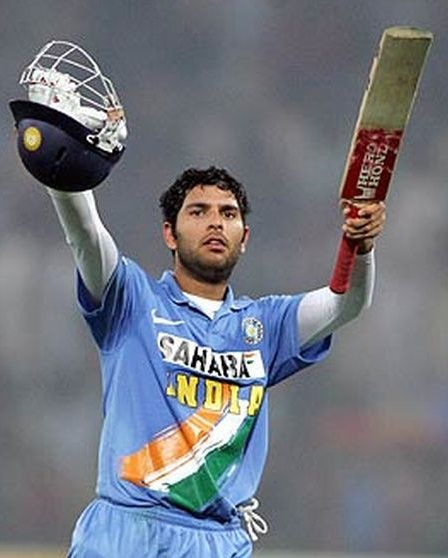
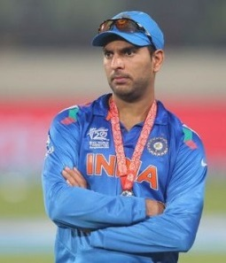

ABOUT:-

Personal information
Full name Yuvraj Yograj Singh
Date of birth 12 December 1981 (age 38)
Place of birth Chandigarh, India
Height 1.88 m (6'2 ft )
Playing position(s) All Rounder
Team information
Played For
India
Number 12
Yuvraj Yograj Singh
(born 12 December 1981) is a former Indian cricketer who played internationally in all forms of the game. An all-rounder who bats left-handed in the middle order and bowls slow left-arm orthodox, Yuvraj is the son of former Indian fast bowler and Punjabi actor Yograj Singh.[2] One of the greatest limited over players to play for India, Yuvraj was particularly noted for his aggressive stroke play of the ball and his fielding.
Yuvraj was a member of the Indian cricket team in One Day Internationals (ODIs) between 2000 and 2017 and played his first Test match in October 2003. He was the vice-captain of the Indian ODI team between 2007 and 2008. He was the Man of the Tournament in the 2011 ICC Cricket World Cup, and one of the top performers at the 2007 ICC World T20, both of which India won. In a match against England at the 2007 World T20, he famously hit six sixes in one over bowled by Stuart Broad[3] — a feat performed only three times previously in any form of senior cricket, and never in an international match between two teams with Test match status. In the same match, he set the record for the fastest fifty in Twenty20 Internationals and in all T20 cricket, reaching 50 runs in 12 balls. During the 2011 World Cup, he became the first player to take a 5-wicket haul and score a 50 in the same World Cup match.

In 2012, Yuvraj was conferred with the Arjuna Award, India's second highest sporting award by the Government of India. In 2014, he was awarded the Padma Shri, India's fourth highest civilian honour. At the 2014 IPL auction Royal Challengers Bangalore bought Yuvraj for an all-time high price of ₹14 crore and, in 2015, the Delhi Daredevils bought him for ₹16 crore making him the most expensive player ever to be sold in the IPL.
On 10 June 2019, Yuvraj announced his retirement from all forms of International cricket.[5][6] He last represented India in June 2017, against the West Indies.